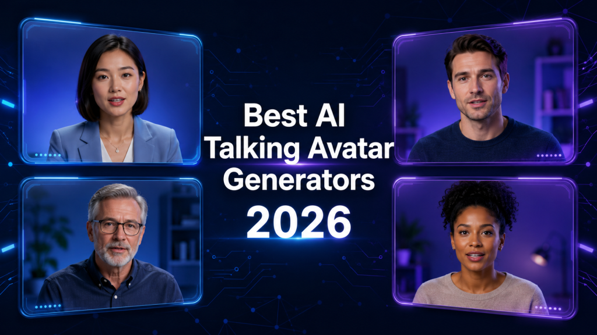
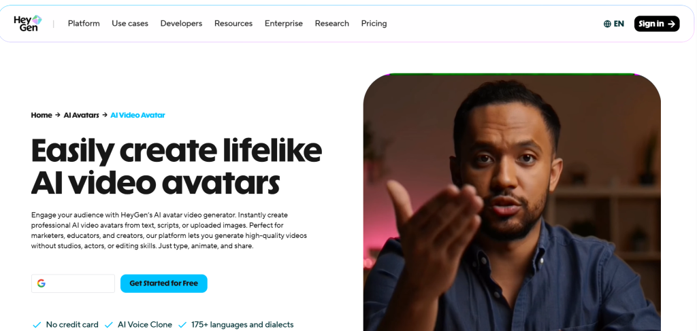
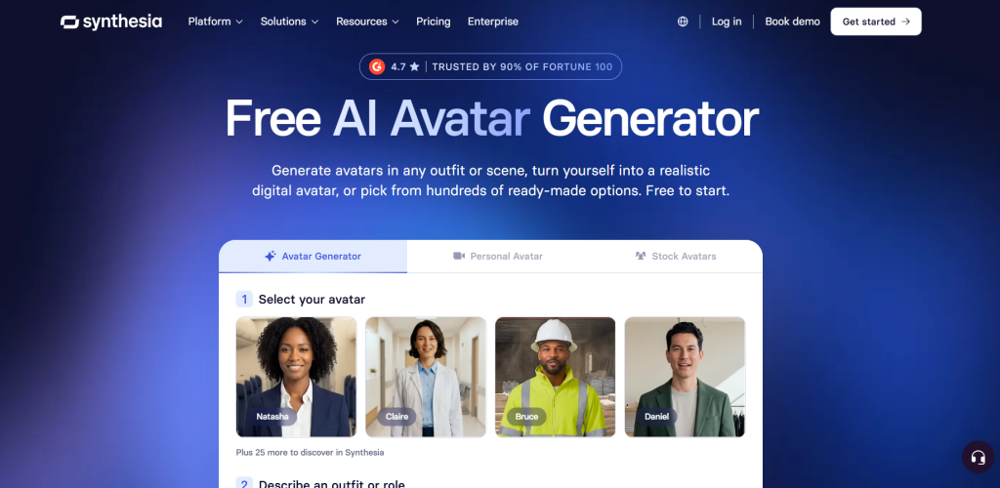
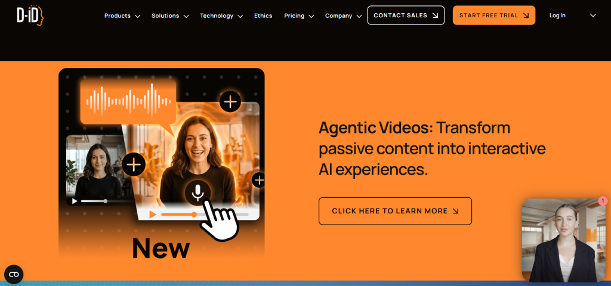
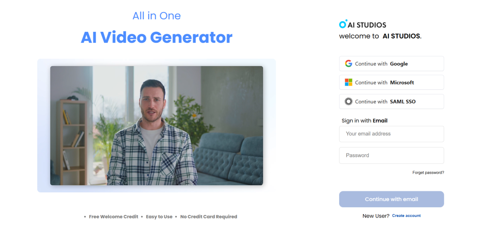
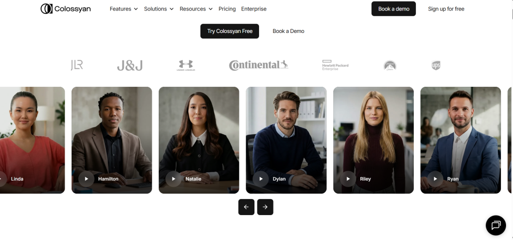
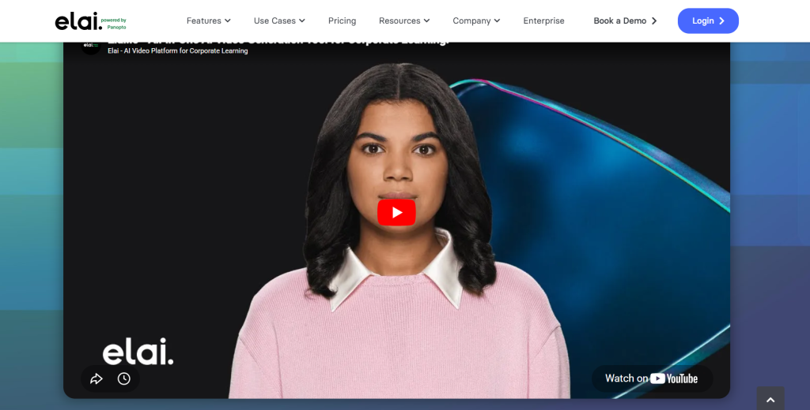
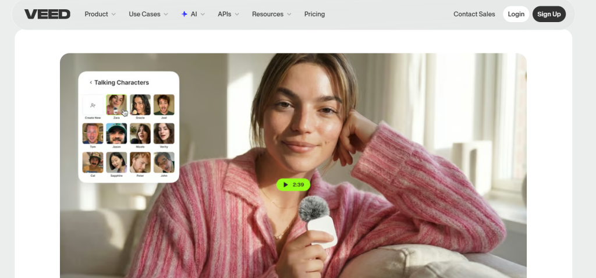
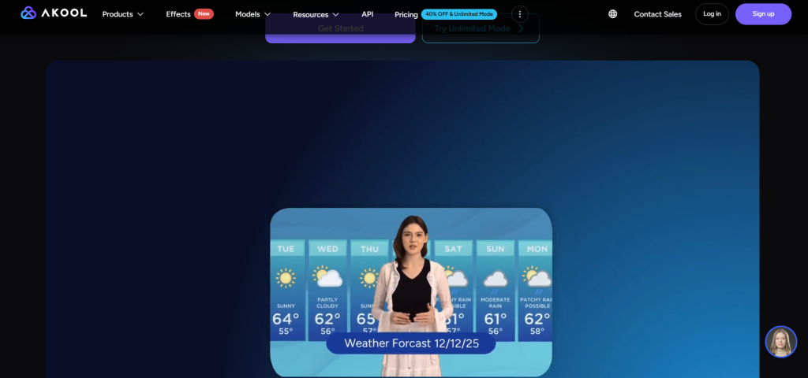

AI talking avatars have quietly crossed from novelty to necessity. In 2026, you can record a five-minute clip of yourself speaking, upload it to a platform, and generate a photorealistic digital twin that speaks 175 languages — all without ever stepping in front of a camera again. For creators, marketers, and global businesses, that is not a gimmick. It is an operational shift.
The demand is real. Training teams are replacing expensive video reshoots with one-click avatar updates. Course creators are localizing content to new markets in hours instead of months. Faceless YouTube channels are scaling output without burning out. Marketing agencies are producing personalized video ads at volumes that would have required a studio crew just two years ago.

But the market has also gotten noisy. Dozens of tools claim to deliver "hyper-realistic" avatars. Very few deliver on that claim consistently. Pricing is often confusing, features are locked behind expensive tiers, and the difference between a polished avatar and an uncanny, robotic one can make or break a campaign.
This guide cuts through all of that. Using current product data, recent user reviews, G2 ratings, Reddit discussions, and hands-on research, we ranked the best AI talking avatar generators in 2026 by what actually matters: realism, voice quality, lip-sync precision, multilingual support, workflow flexibility, and honest pricing. If you are exploring AI tools for content creation to build a scalable video workflow, this is the resource you need.
Quick Picks
Before we go deep, here is a fast summary for readers who already know what they need:
- Best overall: HeyGen — most realistic, broadest language support, best feature set
- Best for realism and performance: Synthesia — strongest body language and emotional expression
- Best for beginners: Colossyan — cleanest interface, fast workflow, great for first-timers
- Best for YouTube creators: HeyGen — flexible, fast, works well for faceless and branded channels
- Best for marketing teams: DeepBrain AI — broadcast-quality output, excellent for ads and brand videos
- Best for multilingual content: HeyGen or Colossyan — 175+ and 70+ languages respectively
- Best budget option: D-ID — starts at $5.90/month with a usable free trial
- Best for custom avatars: HeyGen or Synthesia — digital twin creation with natural gesture support
What Are AI Talking Avatar Generators?
At their core, these tools take a text script and turn it into a video of a digital human speaking that script. The avatar talks, blinks, gestures, and delivers your message — without any filming required.
The technology stack behind it involves three main components. First, voice synthesis converts your written text into spoken audio using either a built-in AI voice or a cloned version of your own voice. Second, lip-sync technology maps those audio phonemes to the mouth movements of the avatar, frame by frame, so the mouth shapes match what is being said in any language. Third, avatar animation handles everything from eye blinks and head tilts to hand gestures and emotional expression.
The most advanced platforms now support the concept of a digital twin: you record a short video of yourself, and the AI builds a model of your face, voice, and movement patterns. The result is an avatar that looks and sounds exactly like you, capable of delivering any script you feed it.
Use cases vary widely. Corporate training teams use these tools to build onboarding modules that can be updated in minutes. Marketers deploy AI spokespersons in product demo videos across multiple languages. Educators create explainer content that scales globally. Faceless YouTubers run entire channels without showing their faces. The tools covered in this guide serve all of these purposes — but not equally well.
How We Researched and Evaluated These Tools?
We did not pull this list from older articles or rely on brand recognition alone. Here is the actual evaluation framework we used.
Realism and avatar quality. We looked for tools with natural head movement, realistic eye blinking, fluid gestures, and skin texture that holds up at standard video resolution. Avatars that looked polished in marketing screenshots but robotic in actual output were ranked lower.
Lip-sync precision. In 2026, phoneme-level lip mapping is the minimum standard. We evaluated how accurately each tool matched mouth movement to audio in both native and translated language outputs.
Voice quality. We compared built-in AI voices and assessed how natural voice cloning sounded. We also checked whether cross-lingual voice cloning was available, meaning whether your cloned voice could speak Spanish with the same tone as your English recording.
Avatar customization. This includes how easy it is to create a custom avatar, whether photo-based or video-based creation is supported, and whether the resulting avatar has natural gesture range.
Language support. We checked official documentation, not just marketing copy, for the actual number of supported languages and whether lip-sync quality held up in non-English outputs.
Ease of use. We factored in how much setup is required, how intuitive the editor is, and how many steps it takes to go from script to published video.
Pricing transparency. Several platforms advertise low starting prices but bury real costs behind credit systems, feature tiers, or enterprise-only gates. We called those out directly.
Real user sentiment. We cross-referenced G2 reviews, Reddit threads, Product Hunt discussions, and YouTube creator feedback to verify what actual users said — not just what platforms claimed.
Best AI Talking Avatar Generators in 2026
1. HeyGen

HeyGen is the benchmark. Nearly every comparison article, Reddit thread, and creator review in 2026 treats it as the tool everyone else is measured against — and for good reason.
HeyGen wins on avatar naturalness with 100+ avatars and 175+ languages. Its Avatar IV technology produces talking-head videos that hold up under close inspection, with natural head movement, realistic eye behavior, and subtle facial expressions that most competitors still struggle to match. HeyGen wins for realistic avatars and creative flexibility, with Avatar IV technology that renders avatars that look genuinely human.
The platform's custom avatar feature allows you to create a photorealistic digital twin from a short video clip. Its Custom Avatar feature generates a photorealistic digital twin from a short video recording — same face, same voice, same natural gestures — deployable across video content in over 300 languages with frame-accurate lip-sync.
For creators working on multilingual content, HeyGen's Video Translate feature is a genuine workflow game-changer. You upload an existing video, and the platform re-dubs it with your avatar speaking in a new language while maintaining lip-sync accuracy. This is particularly useful alongside AI avatar tools for multilingual voiceovers when scaling content across regional markets.
Strengths: Highest avatar realism, widest language range, excellent custom avatar creation, strong API access for developers and marketing teams
Weaknesses: Pricing gets deceptively high. A realistic Creator-plan user making 10 professional videos monthly with Avatar IV and faster processing pays $29 + $15 + $15 = $59/month, not $29. Credit systems and feature tiers create real cost surprises.
Realism: 9.5/10 | Lip-sync: 9/10 | Voice quality: 9/10 | Languages: 175+ | Custom avatar: Yes | Starting price: ~$29/month (real cost often higher)
Best for: Creators, marketing teams, agencies, faceless YouTube channels, multilingual content production
2. Synthesia

Synthesia is the other top-tier platform, and it approaches quality from a different angle. While HeyGen leads on avatar naturalness in talking-head format, for overall realism that includes the face, body language, and performance, Synthesia is the most realistic in 2026.
Synthesia introduced "Body Language 2.0," which enables avatars to perform complex tasks like pointing to elements on a screen or displaying specific emotional arcs — from empathetic to enthusiastic — based on the sentiment analysis of the provided script. That is a meaningful differentiator for corporate video, training content, and any context where the avatar needs to feel like a presenter rather than just a talking head.
Synthesia offers 240+ avatars across 160+ languages with a more structured enterprise editor. Its compliance credentials are strong, with SOC 2 Type II certification that enterprise procurement teams require.
Synthesia wins for enterprise teams and predictable costs with better collaboration features, 140+ languages, and no confusing credit systems.
Strengths: Best full-body performance and emotional expression, strong enterprise compliance, predictable pricing, excellent for training and L&D workflows
Weaknesses: Users consistently describe the avatar aesthetic as "too corporate." The formal presentation style works well for training but can feel stiff for social media or more conversational creator content.
Realism: 9/10 | Lip-sync: 9/10 | Voice quality: 8.5/10 | Languages: 140–160+ | Custom avatar: Enterprise plan | Starting price: ~$18–22/month
Best for: Enterprise L&D teams, corporate communications, large-scale training programs, compliance-sensitive organizations
3. D-ID

D-ID takes a fundamentally different approach. D-ID is known for transforming static photos into lively talking heads with the help of its "Live Portrait" technology. You can upload a headshot — a selfie, a historical photo, even an illustrated character — and the platform will animate it into a talking avatar.
D-ID combines lifelike video avatars with real-time interactive agents, enabling both high-quality video creation and dynamic, human-like conversations. The interactive agent capability is notable: D-ID supports real-time conversational avatars that can respond in live sessions, not just pre-recorded video delivery. D-ID
On pricing, D-ID is the most accessible starting point. D-ID starts at $5.90/month, and the free trial gives you enough to evaluate the platform before committing. That makes it the clear budget recommendation for individuals and small creators.
The limitation is in depth of features. Users who have tested it extensively note that it feels like a lighter version of Synthesia — capable and clean, but lacking the feature richness of the top two platforms.
Strengths: Best entry price, photo-to-avatar animation, real-time interactive avatar support, clean API for developers
Weaknesses: Less feature depth than HeyGen or Synthesia, custom avatar creation can be finicky, fewer voice options out of the box
Realism: 7.5/10 | Lip-sync: 7.5/10 | Voice quality: 7/10 | Languages: Multiple | Custom avatar: Yes (photo-based) | Starting price: $5.90/month
Best for: Budget-conscious creators, developers building interactive avatar apps, anyone needing photo-to-video animation
4. DeepBrain AI

If pure avatar realism is your non-negotiable priority, DeepBrain AI is worth serious attention. DeepBrain AI focuses on pushing the realism boundary. Their avatars are among the most realistic available, with subtle facial expressions, natural eye movement, and fluid head motion. Videoai
The platform targets broadcast-quality output. Its avatars are well-suited for news-style corporate videos, customer-facing brand communications, and high-end product demos where every detail of the digital presenter needs to feel authentic. DeepBrain AI provides 2,000+ avatars with native SCORM support for LMS integration.
The tradeoff is price. DeepBrain's premium quality comes at a cost — plans start from $30/month and HeyGen wins on pricing and feature breadth. For teams that need the absolute best visual output and can justify the spend, DeepBrain delivers. For budget-sensitive workflows, the cost-to-benefit may not stack up against HeyGen.
Strengths: Highest avatar realism in the market, fast rendering, excellent for corporate and news-style content, strong LMS integration
Weaknesses: Higher starting price, fewer workflow automation features compared to HeyGen and Synthesia, can feel over-engineered for casual creator use
Realism: 9.5/10 | Lip-sync: 9/10 | Voice quality: 8.5/10 | Languages: Multiple | Custom avatar: Yes | Starting price: ~$30/month
Best for: Corporate brand videos, news-style presentations, enterprise customer-facing content, high-production-value marketing
5. Colossyan

Colossyan has carved out a clear niche: training-focused AI video with the most beginner-friendly workflow of any platform in this tier. Colossyan really shines with its AI assistant. It helps correct grammar, specify tone, set audience, adjust video length, and even brainstorm ideas. The ChatGPT integration is genuinely one of the best in this type of platform. www.vidmetoo.com
Colossyan solves the international content challenge by automatically translating videos into 70+ languages and adjusting avatar lip-sync to match each language. For L&D teams producing multilingual training modules, this workflow is particularly strong.
The platform supports interactive video features including branching scenarios and quizzes — something HeyGen does not offer natively. HeyGen wins on avatar variety and social content. Colossyan wins on interactive training features and quizzes.
The downside is avatar customization depth. Compared to Elai or HeyGen, Colossyan's avatar range and customization options feel more restricted. The template library is smaller than both Synthesia and HeyGen.
Strengths: Best interactive learning features, strong AI writing assistant, clean and fast workflow, good multilingual support, 4K output even on lower plans
Weaknesses: Smaller avatar and template library, avatar customization is basic, less versatile for marketing and social content
Realism: 7.5/10 | Lip-sync: 7.5/10 | Voice quality: 8/10 | Languages: 70+ | Custom avatar: Limited | Starting price: ~$19/month
Best for: L&D professionals, educators, corporate training teams, HR and onboarding workflows
6. Elai.io

Elai stands out for one underrated capability: document-to-video conversion. You paste a URL, upload a PDF or PowerPoint, and the platform generates a fully narrated avatar video based on the content. Elai offers a range of document-to-video automation flows, converting existing content into avatar-driven videos. The platform rendered a test video in only 1 minute and 34 seconds, making it one of the fastest AI video tools available. Synthesia
Elai offers 80+ high-quality talking avatars based on real actors, along with options to create custom studio avatars, selfie avatars, photo avatars, or even animated mascots. The platform supports 75+ languages, 450+ voices, and multilingual voice cloning in 28 languages.
Users consistently highlight how easy Elai is to get started with. The voice quality stands out too: reviewers note that Elai's avatars don't just look realistic, they sound convincingly human.
Strengths: Fastest rendering times, excellent document-to-video workflow, strong voice quality, broad avatar customization options including mascots
Weaknesses: Avatar animation range can feel restricted for creative use cases; not as well-known as HeyGen or Synthesia, which affects long-term support confidence
Realism: 7.5/10 | Lip-sync: 8/10 | Voice quality: 8.5/10 | Languages: 75+ | Custom avatar: Yes | Starting price: ~$23/month
Best for: Teams repurposing existing content (slides, PDFs, documents), fast-turnaround video production, educators, training teams needing voice variety
7. VEED AI Avatars

VEED is not primarily an avatar platform — it is a full browser-based video editor with AI avatar functionality built in. VEED offers a full browser-based editor with AI features at $12/month. Auto-subtitles in 125+ languages. G2 reviewers praise ease of use. AI avatars are less polished than Colossyan's but the editor is far more versatile.
For creators who need a single tool that handles recording, editing, subtitles, screen capture, and avatar video in one place, VEED delivers strong value at its price point. The avatar quality is not at the level of HeyGen or Synthesia, but for short-form social content and basic talking-head videos, it is more than adequate.
Strengths: Best all-in-one video editing workflow, strong subtitle automation, affordable pricing, easiest to onboard for non-technical users
Weaknesses: Avatar quality is noticeably below dedicated platforms; no SCORM export, no branching scenarios, not suited for high-volume professional video
Realism: 6.5/10 | Lip-sync: 6.5/10 | Voice quality: 7/10 | Languages: 125+ (subtitles), varies for avatars | Custom avatar: Limited | Starting price: ~$12/month
Best for: Social media creators, solo creators who edit their own videos, budget-conscious teams, casual talking-head content
8. Akool

Akool offers better credit allocation than many competitors, making it a practical option for teams watching per-video costs. The platform covers face swap, avatar video, and image personalization under one subscription. It is not the most feature-rich tool in this list, but its credit economy makes it accessible for moderate-volume users who find HeyGen's pricing model frustrating.
Best for: Teams running moderate video volumes who want predictable per-video costs
Best AI Avatar Generators by Use Case
YouTubers and faceless channel creators should start with HeyGen. The Avatar IV realism is strong enough for long-form content, and the custom avatar feature means your channel can have a consistent presenter identity without you ever appearing on camera. The workflow from script to finished video is fast enough to support a weekly upload schedule. Pair it with AI talking avatar generators in your content stack for maximum flexibility.
Marketers and performance teams running Meta or social campaigns often find that pure realism is less important than turnaround speed and variation testing. For high-volume ad testing, tools like Creatify or Akool are more cost-effective per concept than HeyGen. For premium brand spokespersons, DeepBrain AI delivers the visual quality that holds up in high-production brand contexts.
Agencies handling multiple clients benefit most from platforms with strong API access and team collaboration features. HeyGen's Business plan and Synthesia's enterprise tier both support multi-user workflows and client-level organization. Check whether SCORM or LMS integration is needed before committing.
Educators and course creators will find Colossyan and Elai the most practical. Both support document-to-video conversion, interactive content features, and strong multilingual output — all of which are essential for globally distributed courses.
Social media creators focused on short-form content on TikTok, Instagram Reels, or YouTube Shorts should look at VEED first for its editing-plus-avatar workflow, or HeyGen for higher-quality output without the video editing overhead.
Enterprise teams needing compliance, SOC 2 certification, and procurement-friendly pricing should focus on Synthesia first, then DeepBrain AI. Both have the audit trail and compliance documentation large organizations require.
Multilingual content creators get the best results from HeyGen (175+ languages, strong lip-sync localization) or Colossyan (70+ languages with automatic translation and lip-sync adjustment). If you are building a full multilingual content pipeline, read our deeper guide on multilingual AI voiceover tools to understand how these platforms integrate with broader localization workflows.
Comparison Table
| Tool | Best For | Realism | Voice Quality | Lip-Sync | Languages | Custom Avatar | Ease of Use | Starting Price | Biggest Strength | Biggest Weakness |
|---|---|---|---|---|---|---|---|---|---|---|
| HeyGen | Creators, marketers | 9.5/10 | 9/10 | 9/10 | 175+ | Yes | 8/10 | ~$29/mo | Avatar realism + languages | Hidden credit costs |
| Synthesia | Enterprise, L&D | 9/10 | 8.5/10 | 9/10 | 140–160+ | Enterprise only | 8/10 | ~$18/mo | Body language + compliance | Too corporate for social |
| D-ID | Budget, developers | 7.5/10 | 7/10 | 7.5/10 | Multiple | Yes (photo) | 9/10 | $5.90/mo | Price + photo animation | Feature depth |
| DeepBrain AI | Corporate brand | 9.5/10 | 8.5/10 | 9/10 | Multiple | Yes | 7/10 | ~$30/mo | Absolute realism | Higher price |
| Colossyan | Training, L&D | 7.5/10 | 8/10 | 7.5/10 | 70+ | Limited | 9/10 | ~$19/mo | Interactive + beginner-friendly | Smaller avatar library |
| Elai.io | Document-to-video | 7.5/10 | 8.5/10 | 8/10 | 75+ | Yes | 9/10 | ~$23/mo | Fastest rendering | Animation range |
| VEED | Social, editing | 6.5/10 | 7/10 | 6.5/10 | 125+ (subs) | Limited | 9/10 | ~$12/mo | All-in-one editor | Avatar quality |
| Akool | Budget-sensitive | 7/10 | 7/10 | 7/10 | Multiple | Yes | 8/10 | Custom | Credit allocation | Less brand recognition |
Best for beginners: Colossyan — fastest learning curve, clean UI, AI writing assistant built in
Best for professional teams: Synthesia — team features, compliance, enterprise workflows
Best for realistic avatars: HeyGen Avatar IV or DeepBrain AI — both hit near-human quality
Best for multilingual workflows: HeyGen — 175+ languages with strong cross-lingual lip-sync accuracy
Real AI Avatar Workflow Examples
[Insert AI Talking Avatar Workflow Diagram Here]
Faceless YouTube workflow. Write your script in a doc. Paste into HeyGen. Select or load your custom avatar. Choose voice (or use cloned voice). Generate video. Export and edit in your video editor with music and B-roll. Publish. The entire process from script to upload-ready file can take under 30 minutes for a five-minute video.
Multilingual ad workflow. Create your core product demo video in English using HeyGen or DeepBrain AI. Use the platform's translation feature to generate Spanish, French, German, and Portuguese versions automatically. All lip-sync adjusts to each language. You now have five market-ready ad videos from one original production.
Course creation workflow. Upload your existing PowerPoint curriculum to Elai. The platform converts each slide into a narrated avatar scene. Review and adjust timing. Export. A 10-module course that would take days to film can be produced in an afternoon.
Internal training workflow. Use Synthesia or Colossyan to build onboarding modules with interactive quizzes. When company policy changes, update the script and regenerate the affected slides — no reshoots, no scheduling, no studio.
Social media short-form workflow. Use VEED to record or upload a clip, add your AI avatar as a presenter overlay, auto-generate captions, resize for TikTok or Reels format, and export. The whole workflow stays in one browser tab.
AI spokesperson workflow. For product announcement videos, use DeepBrain AI to create a broadcast-quality spokesperson. Script the message, generate the avatar video, layer in product visuals and branded motion graphics. The result looks indistinguishable from a professionally produced brand video.
For the motion graphics and branded elements that go around your avatar videos, the AI tools for motion graphics guide covers the best options for intros, outros, lower thirds, and animated title cards that complement talking-head content professionally.
Best Practices for Better AI Avatar Videos
Getting good output from these platforms is about more than clicking "generate." Here is what actually makes a difference:
Script writing. Write for spoken delivery, not reading. Short sentences. Natural pauses. Avoid jargon, long compound sentences, or overly formal phrasing — the avatar will deliver exactly what you write, and robotic scripts produce robotic results even with the best avatar.
Voice selection. Match the voice to the content tone. A training video should use a clear, measured voice. A social media clip can carry more energy. If you are building a custom avatar, invest time in the voice cloning process — record in a quiet space, follow the platform's guidance on length and clarity.
Reducing uncanny results. The uncanny valley problem is most common when avatars try to emote strongly. If the platform allows emotion settings, start conservative. A neutral-to-warm delivery lands better than an aggressively enthusiastic one.
Framing and positioning. Most platforms default to center-frame. If you have control over avatar placement, slightly off-center positioning with relevant on-screen text or graphics creates a more dynamic layout that holds viewer attention longer.
Subtitles. Always add them. Subtitles improve accessibility, boost watch time on social platforms where autoplay is muted, and are especially important for multilingual audiences. Most platforms generate them automatically.
Branding. Use brand colors, logo placement, and consistent avatar styling across all your videos. Viewers recognize consistency. An avatar that looks different from video to video undermines brand trust. For visual assets that support avatar video branding, explore the Adobe Firefly review for thumbnail creation and promotional graphics.
Voice narration vs. avatar delivery. Some workflows benefit from combining an AI avatar with separate narration. The avatar provides visual presence while a high-quality AI voice from a dedicated tool handles the audio layer. If you are using this approach, the Murf AI review covers one of the strongest dedicated AI voiceover platforms currently available.
Common Problems and Limitations
Be honest with yourself about where these tools fall short.
Uncanny valley. Even the best platforms occasionally produce moments where something just looks slightly off — an eye that blinks at the wrong time, a head tilt that does not match the sentence rhythm. It is rare with HeyGen Avatar IV and Synthesia at their best, but it still happens.
Robotic delivery. Avatars deliver what you script. A poorly written script produces a stilted performance. The platform is not responsible for fixing bad writing.
Lip-sync degradation in non-English languages. Most platforms perform best in English. Lip-sync accuracy in languages with phoneme patterns very different from English — particularly East Asian and Slavic languages — varies significantly by platform.
Rendering delays. Premium renders can take minutes, not seconds. If you are producing videos at volume, factor render queue times into your workflow planning.
Credit system frustration. Multiple platforms use credit systems where you burn credits for processing, for premium features, or for specific avatar types. Real monthly costs are often 50–100% higher than the advertised starting price. Read the fine print before committing.
Custom avatar limits. Creating a high-quality digital twin typically requires a specific recording process. If you record in poor lighting, with background noise, or without following the platform's guidelines, the output quality drops dramatically.
Policy and ethical considerations. All major platforms require verification or agreements that custom avatars are of yourself or a consented person. Creating AI clones of other individuals without permission violates platform terms and, increasingly, regional laws.
When a human presenter is still better. For emotionally sensitive content — apology videos, empathy-heavy support messages, deeply personal brand stories — a human presenter still connects more authentically than any AI avatar currently available.
AI Talking Avatars vs Traditional Video Production
| Factor | AI Avatar Tools | Traditional Production |
|---|---|---|
| Speed | 30 min to a few hours | Days to weeks |
| Cost | $20–150/month | $500–$5,000+ per video |
| Scalability | Unlimited at fixed cost | Cost scales with volume |
| Realism | Near-human to very good | Perfect (real person) |
| Updates | One-click script change | Full reshoot required |
| Flexibility | Any language, any script | Limited by scheduling |
| Production quality | High (top tools) | Highest possible |
| Best for | Scalable, repeatable content | High-stakes singular moments |
The case for AI avatars is strongest when you need volume, consistency, and multilingual reach. The case for traditional production remains strongest for brand-defining hero content, emotionally driven campaigns, and executive communications where authenticity carries significant commercial weight.
Pros and Cons of AI Talking Avatar Generators
Pros:
- Eliminate camera, lighting, and studio costs
- Update content instantly without reshooting
- Scale to any number of languages without dubbing crews
- Maintain consistent brand presenter identity across all content
- Produce professional video output from text in under an hour
- Accessible to solo creators without video production skills
- Increasingly realistic at top-tier platforms
Cons:
- Uncanny valley moments still occur even on premium platforms
- Real monthly costs often exceed advertised starting prices
- Custom avatar creation requires careful setup to achieve good results
- Lip-sync quality degrades in some non-English languages
- Emotional and empathy-driven content still works better with human presenters
- Platform policies limit use of other people's likenesses
- Viewer trust may differ for audiences who recognize AI-generated content
The Future of AI Talking Avatars in 2026 and Beyond
The most significant near-term development is real-time interactive avatars. HeyGen's Streaming Avatar API powers real-time interactive avatars for live customer support, virtual events, and AI-driven sales conversations. This moves avatars beyond pre-recorded delivery into live, responsive conversation — an AI agent that looks and sounds human, conducting real-time dialogue.
Personalized video at scale is the other major trajectory. The ability to generate thousands of unique videos where the avatar addresses each recipient by name, references their specific situation, and adapts the content dynamically is already technically possible. In the next 12–24 months, this capability will become a standard marketing automation feature rather than an enterprise luxury.
Emotional intelligence in avatars is advancing rapidly. Synthesia's Body Language 2.0 is an early version of what will eventually become standard: avatars that read the emotional context of a script and adjust their expression, pacing, and gestures accordingly without manual configuration.
The convergence of AI agents and video avatars is perhaps the biggest long-term story. When your AI customer support agent can conduct a real-time video conversation with a photorealistic avatar face, the distinction between "chatbot" and "human representative" blurs considerably. The platforms that manage this transition well — technically, ethically, and commercially — will define the category for the next decade.
Who Should Use AI Talking Avatar Generators?
Beginners and solo creators who want to build an online presence without appearing on camera. Start with Colossyan or D-ID for ease of use and affordable pricing.
Content creators running faceless YouTube channels, newsletters with video components, or social media presence at scale. HeyGen is the go-to.
Marketers running campaigns that require spokesperson videos, product demos, or localized ad content. HeyGen or DeepBrain AI depending on budget and quality requirements.
Businesses that produce customer-facing videos regularly — product announcements, support content, explainer videos — and want to reduce production friction. Synthesia or HeyGen depending on team size and compliance requirements.
Educators and course creators who need to convert existing curriculum into engaging video and reach international audiences. Elai or Colossyan.
Agencies managing video production for multiple clients. HeyGen Business plan or Synthesia enterprise for collaboration and client management features.
Automation-focused teams building AI video into product workflows via API. HeyGen and D-ID have the strongest developer-facing APIs currently.
As part of a broader AI content creation stack, these tools deliver the most value when integrated with script generation, video editing, and distribution workflows rather than used in isolation.
Final Verdict
Best overall: HeyGen — the most capable, realistic, and flexible tool in the market in 2026. The pricing complexity is a real frustration, but the output quality and feature depth justify it for serious use cases.
Best budget choice: D-ID — at $5.90/month with a functional free trial, it is the most accessible entry point for creators and small businesses.
Best realism-focused choice: HeyGen Avatar IV or DeepBrain AI — both achieve near-human quality, with DeepBrain edging ahead for broadcast-style corporate content.
Best business choice: Synthesia — compliance, team features, and predictable pricing make it the safest enterprise choice.
Best creator choice: HeyGen — the combination of Avatar IV realism, 175+ languages, custom avatar creation, and creator-friendly workflow is unmatched.
Best multilingual choice: HeyGen for language range; Colossyan for ease of multilingual workflow management.